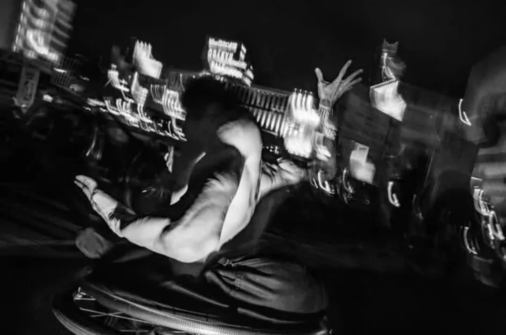

DJ SABOTEN
写真家 大西正氏の路上写真からDJ Mixを紡ぎ出していく「Streetphoto × DJ」のSession


Mix
Q.1
不特定多数が交錯する路上にあえて意識を向けると、自分もその不特定多数の群衆の一部となります。その中でどうありたいと思いますか？
自分のやりたいことをやってそれを良いと思う人がいたら最高ですね！
私はどこにいても自分が幸せでいるために自分の機嫌をとってたいからそのために周りの人にも気持ちよく居て欲しいと思ってるけど感じ方は人それぞれだから誰かを傷つけないように自分の機嫌をとることを優先してます笑
Q.2
どのようにしてDJ/CLUBには出会いましたか？どういう場所として捉えていますか？また、その中でどうありたいと思いますか？
幼少期からピアノを習っていて音楽が身近だったことと、絵を描くこと、人体改造に興味があってピアスやタトゥーが好きだったので高校卒業後、音楽に携わる仕事をするか彫り師になりたくて上京してタトゥーOKで働ける場所を探してたら今働いているDebrisを見つけて面接を受けたのがきっかけでした。音とお酒を楽しんで気持ちよくなる場所。今は店長としてみんなが私がいることで安心できるような存在になりたいです。
Q.3
理想的なダンスフロアとはどのようなものだと思いますか？
みんなが音に没入して安心して自由に楽しんでるフロア
Street photo
大西正 / Tadashi Onishi
東京生まれ。スナップ写真とドキュメンタリーの接点を模索するため街景や日常生活における社会性を日々撮影している。現代社会を投影する自己をスナップ写真という手法により浮かび上がらせる。Rozo Project 主宰、VoidTokyo メンバー、Stone Age crew。
DJ Mix
DJ SABOTEN
新潟県出身。6歳からクラシックピアノを習い、音楽に親しむ。19歳で彫り師を志して上京後、代官山のMusic Bar「Debris」にて働き始め、2021年よりDJとしてのキャリアをスタート。日々多彩なDJやアーティスト、ジャンルの音楽に触れながら感性を磨く。現在はDebrisの店長を務め、ヒップホップ、レゲエ、ベース、ハウス、生音系まで幅広い選曲で都内各地のDJ BARにて活躍中。